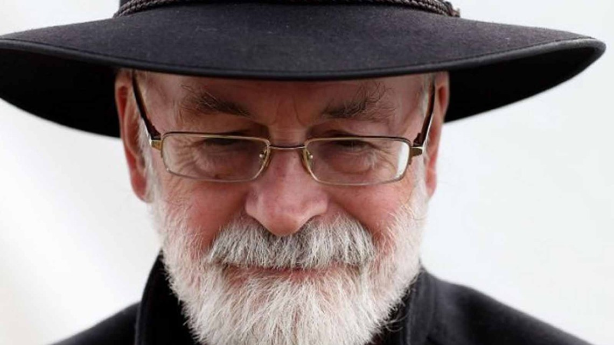

Sir Terry Pratchett
The storytelling magician who built a world on the back of a turtle

More than 85 million books sold worldwide in 37 languages.
Timeline:
- 1962 - Publishes his first story, "Business Rivals," in school magazine The Technical Cygnet at age 13.
- 1965 - Leaves school to accept a job at local newspaper The Bucks Free Press, part of which is a weekly Children's Circle story column.
- 1968 - Interviews a local publisher, Peter Bander van Duren, and meets Colin Smythe; sells his first novel, The Carpet People; and marries his wife, Lyn, in the same year.
- 1971 - The Carpet People is published; Terry is still only 23.
- 1976 - Terry's daughter Rhianna is born.
- 1979 - Becomes press officer for the Central Electricity Generating Board a few months after the Three Mile Island disaster in the USA.
- 1983 - The Colour of Magic, the first Discworld novel, is published by Colin Smythe.
- 1986 - The third Discworld novel, Equal Rites, is serialised for radio on Woman's Hour and becomes the most popular book they ever broadcast.
- 1987 - Gives up his job at the Central Electricity Generating Board to become a full-time writer.
- 1996 - The Times reports that Terry Pratchett is now the bestselling author in the UK.
- 1998 - The Queen appoints him Officer of the Order of the British Empire in her Birthday Honours List.
- 2002 - Wins the Carnegie Medal for his children's book The Amazing Maurice and his Educated Rodents.
- 2007 - Receives diagnosis of Posterior Cortical Atrophy and begins a campaign to raise awareness of Alzheimer's.
- 2009 - Terry is knighted by the Queen for services to literature.
There are times when phrases such as "totally astonished" just don't do the job. I am of course delighted and honoured and, needless to say, flabbergasted.
―Terry Pratchett
- 2010 - Delivers the annual Dimbleby Lecture on his campaign to reform the law on assisted dying and attracts a record TV audience, the highest ever for a Dimbleby Lecture.
- 2011 - Presents a documentary on assisted dying, Terry Pratchett: Choosing to Die, which wins both a BAFTA and an Emmy.
- 2013 - Despite the progress of his disease, publishes his 40th Discworld novel and The Long War, a collaboration with Stephen Baxter.
- 2015 - Terry dies peacefully at home in Wiltshire, with his family and his pet cat. He finished one final Discworld novel, The Shepherd's Crown, a few months earlier.
Discworld novels:
- The Colour of Magic
- The Light Fantastic
- Equal Rites
- Mort
- Sourcery
- Wyrd Sisters
- Pyramids
- Read the full list
He'd be the sort to stand on a hilltop in a thunderstorm wearing wet copper armour and shouting "All gods are bastards!"
―Terry Pratchett
For more on the life and times of Sir Terry Pratchett, check out his Wikipedia article. The Discworld universe has its own wiki.